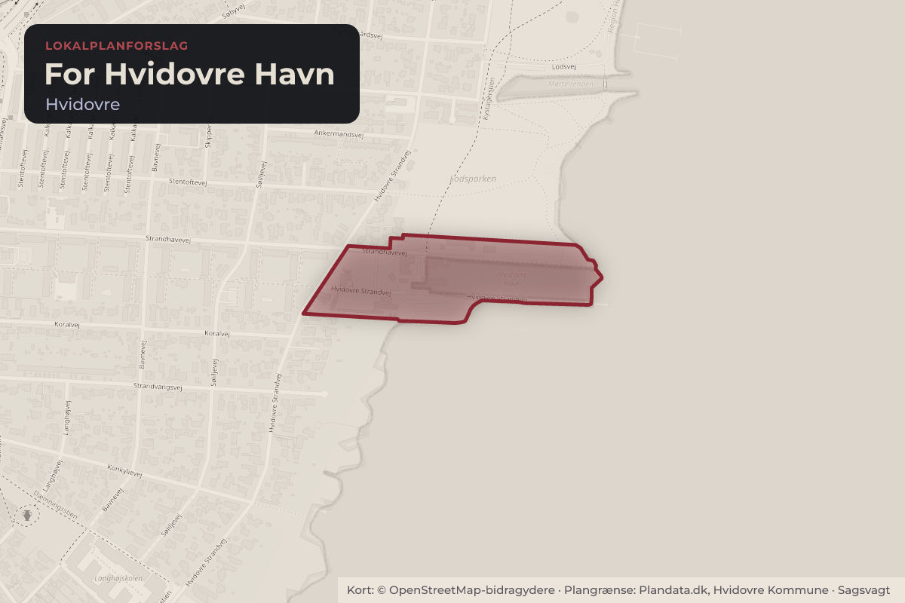
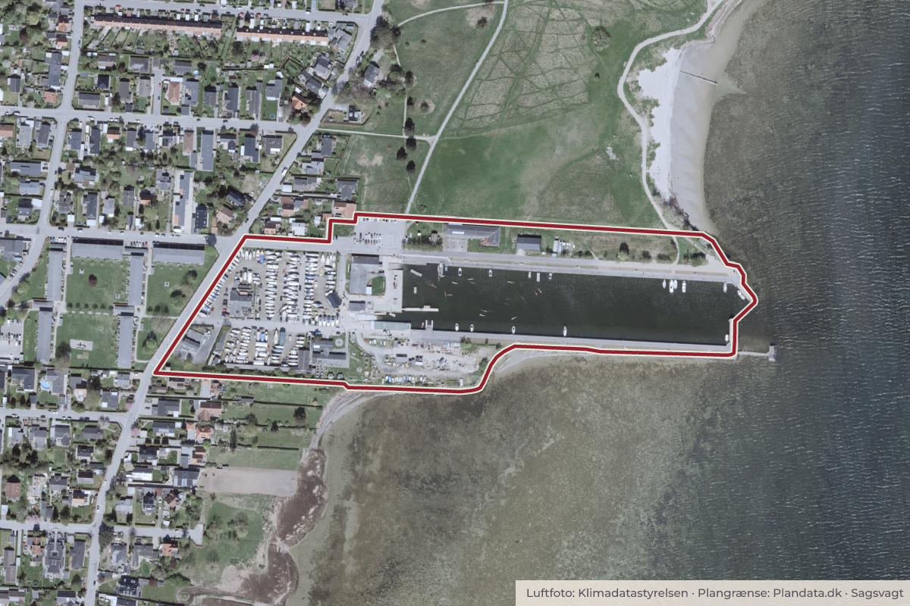

Besluttet 25. august, Kommunalbestyrelsen, Hvidovre
Forslag til Lokalplan 350 for Hvidovre Havn
Direktøren indstiller til By- og Planudvalget at anbefale over for Kommunalbestyrelsen 1. at godkende forslag til Lokalplan 350 for Hvidovre Havn, 2. at godkende, at lokalplansforslaget sendes i offentlig høring i mindst fire uger, 3. at godkende, at der i løbet af høringsperioden afholdes en borgerworkshop om lokalplansforslagets indhold, 4. at godkende, at der ikke skal gennemføres en miljøvurdering af lokalplanen.

Kort: © OpenStreetMap-bidragydere. Plangrænse: Plandata.dk, Hvidovre Kommune.

Kort fortalt
- Forslaget
- Godkende forslag til Lokalplan 350 for Hvidovre Havn
- Godkende, at lokalplansforslaget sendes i offentlig høring i mindst fire uger
- Godkende, at der i løbet af høringsperioden afholdes en borgerworkshop om
Og 1 punkter mere i indstillingen herunder.
- Hvem
- Kommunalbestyrelsen, Hvidovre Kommune
- Hvornår
- Tirsdag 25. august 2026
- Status
- Besluttet. Ad 1. Kommunalbestyrelsen godkendte forslag til Lokalplan 350 for Hvidovre Havn. Ad 2. Kommunalbestyrelsen godkendte, at lokalplansforslaget sendes i offentlig høring i mindst fire uger. Ad 3. Kommunalbestyrelsen godkendte, at der i løbet af høringsperioden afholdes en borgerworkshop om lokalplansforslagets indhold. Ad 4. Kommunalbestyrelsen godkendte, at der ikke skal gennemføres en miljøvurdering af lokalplanen.
Læs hele sagen Kommunens egen tekst
Indstilling
Direktøren indstiller til By- og Planudvalget at anbefale over for Kommunalbestyrelsen
1. at godkende forslag til Lokalplan 350 for Hvidovre Havn,
2. at godkende, at lokalplansforslaget sendes i offentlig høring i mindst fire uger,
3. at godkende, at der i løbet af høringsperioden afholdes en borgerworkshop om
lokalplansforslagets indhold,
4. at godkende, at der ikke skal gennemføres en miljøvurdering af lokalplanen.
Behandling i By- og Planudvalget 10. august 2026
Ad 1. Anbefales godkendt.
Ad 2. Anbefales godkendt.
Ad 3. Anbefales godkendt.
Ad 4. Anbefales godkendt.
Sagsfremstilling
Center for Plan og Miljø har udarbejdet dette dagsordenspunkt.
Administrationen har udarbejdet et forslag til Lokalplan 350 for Hvidovre Havn (vedlagt som
bilag ”Forslag til Lokalplan 350 for Hvidovre Havn”).
Lokalplan 350 omfatter hele Hvidovre Lystbådehavn samt en ejendom med en
kloakpumpestation, som ejes af HOFOR Spildevand. Området, der er beliggende i den østlige
del af Hvidovre Kommune, afgrænses mod nord af det fredede område Lodsparken og
Hvidovre Strand og mod vest og syd af Strandmarkskvarterets parcelhusbebyggelse samt
Hvidovrebos etageboliger ved Strandhavevej.
Lokalplansområdet har et samlet areal på ca. 61.000 m², hvoraf havnebassinet udgør ca.
20.000 m², og landarealerne udgør ca. 41.000 m². Området er bebygget med omkring 20
bygninger med et samlet etageareal på 2.278 m².
Baggrund og formål med lokalplanen
Hvidovre Havn rummer i dag en stor variation af havneaktiviteter, foreningsliv, havnerelateret
erhverv samt mange muligheder for rekreativ brug og ophold til glæde for det almene friluftsliv i
byen. Det har længe været Kommunalbestyrelsens ambition, at havnen udvikles, så den kan
tiltrække endnu flere brugere, også uden for det etablerede foreningsliv. Visionen for
udviklingen er beskrevet i idéoplægget fra 2024, som blandt andet Havneudvalget har været
drivkraft i.
Som led i udviklingen af området har Kommunalbestyrelsen i 2025 godkendt et projektforslag
for et nyt foreningshus til Hvidovre Roklub, roklubben Knørrur og Hvidovre Triathlon Club på
havnen. Den nye lokalplan skal muliggøre det betydelige udviklingspotentiale, som
idéoplægget peger på, herunder realiseringen af det nye foreningshus. Lokalplanen sætter livet
i og brugen af havnen i fokus ved at have fokus på de ubebyggede arealer og give mulighed
for, at der også i fremtiden kan opføres bygninger af meget forskelligt udseende.
Udover det aktuelle arbejde med foreningshuset har Hvidovre Kommune i perioden 2022-2024
gennemført en omfattende renovering og forskønnelse af havnen.
Dialog med havnens foreninger
Udviklingen af havnen er vigtig for mange, og derfor skal lokalplanen afspejle de forskellige
ønsker til både havnens funktioner og udnyttelsen af arealerne. Havneudvalgets udfærdigelse
af Idéoplægget, med alle dets erfaringer, udgør allerede et rigtig godt afsæt for arbejdet med
lokalplanen, men det er ikke tilstrækkeligt konkret til, at der kan udarbejdes egentlige
lokalplanbestemmelser ud fra det.
For at skabe et mere detaljeret grundlag har Hasløv & Kjærsgaard i samarbejde med Hvidovre
Kommune udarbejdet en samlet plan for de ubebyggede havnearealer (vedlagt som bilag
”Hvidovre Havn – plan for de ubebyggede arealer”).
I processen blev der afholdt en workshop med havnens foreninger samt områdets naboer for at
indsamle ønsker til den fremtidige disponering af udearealerne. Disse input er samlet og
indarbejdet i lokalplansforslaget og vil fortsat indgå i den videre dialog og planlægning.
I lokalplanens offentlige høringsperiode foreslås det, at der afholdes et offentligt borgermøde
om lokalplanens indhold, med fokus på at præsentere og i dialog drøfte de konkrete
løsningsforslag for havnens fremtidige rammer.
Lokalplanens indhold
Lokalplanens fokus er på indretningen og brugen af havnens ubebyggede arealer. Her er
driften og brugen af havnen tænkt sammen med ankomsttorv og strøg for besøgende, så alle
brugergrupper får blik for hinanden uden at komme i vejen. Anvendelserne af de ubebyggede
arealer varierer mellem sæsoner, så der i sommerperioden eksempelvis muliggøres boder
langs havnens hovedstrøg samt bilparkering på området for vinteropbevaring af både.
Imellem de udlagte ubebyggede arealer giver lokalplanen vide muligheder for hvordan
bebyggelse til understøttelse af både foreningslivet og havnens rekreative funktioner og drift,
kan etableres og se ud. Det omfatter blandt andet et maritimt center med café og
undervisningsfaciliteter, et nyt masteskur samt forskellige erhvervsfunktioner relateret til
havnens aktiviteter.
Lokalplanen fastholder de centrale træk i havnens udformning, men muliggør en opgradering
af havnens drifts- og trafikarealer, og det rekreative stinet. Målet er at forbedre både
funktionaliteten og opholdskvaliteterne på havnen.
Lokalplanen udlægger selve Hvidovre Havn til rekreativt område med havneformål. Her må
ejendommen anvendes til lystbådehavn og tilknyttede foreninger og erhverv, som restaurant,
café, boder og mindre butikker samt et maritimt center til undervisning i natur og miljø i og
omkring vandet. HOFORs ejendom udlægges til tekniske anlæg. Hele lokalplansområdet må
desuden anvendes til anlæg til højvandssikring og regnvandshåndtering.
I delområde 1 og 2, Hvidovre Havn, må bebyggelsesprocenten ikke overstige 10 for den
enkelte ejendom. I delområde 3, HOFORs ejendom, må bebyggelsesprocenten ikke overstige
25 for den enkelte ejendom.
Klimatilpasning og nye udeområder
Lokalplanen fastsætter bestemmelser for indretningen af de centrale parkeringsarealer, så de
bedre kan anvendes på skift til bilparkering og opbevaring af både alt efter sæsonen. Den nye
disponering har til formål at skabe en bedre logistik for bådhåndtering, og samtidig frigøre
plads til nye opholds- og byrumsmæssige kvaliteter langs den del af Hvidovre Strandvej, der
ligger inde på havnen.
Lokalplanen udlægger desuden en sikringszone på tværs af havnens udearealer, som skal
reserveres til etablering af en fremtidig højvandssikring. Sikringen skal udformes som et
rekreativt og trafikstyrende element, der guider besøgende rundt i havnen på en
hensigtsmæssig måde.
Vegetationen på Hvidovre Havn er et centralt element i havnens identitet og visuelle udtryk.
Lokalplanen fastsætter derfor bestemmelser for beplantning, så fremtidige tiltag understøtter
det maritime miljø og den tætte relation til kystlandskabet. Nye træer og grønne opholdsrum
placeres strategisk for at markere ankomster, skabe struktur i større arealer og forbedre
opholds- og færdselsforhold.
Tillæg til Kommuneplan 2021
Lokalplan 350 er ikke i overensstemmelse med Kommuneplan 2021, da afgrænsningen
mellem rammeområderne 3F6 og 3T1 ikke stemmer overens med de aktuelle matrikelskel. Der
er derfor udarbejdet et forslag til Tillæg nr. 12 til Kommuneplan 2021, så rammernes
afgrænsning følger matrikelskellet mellem havneområdet og pumpestationen.
Kommuneplantillægget sikrer, at arealet med foreningsbygninger umiddelbart øst for HOFORs
ejendom i lokalplanen kan planlægges til rekreative havneformål.
Forslaget til kommuneplantillæg behandles sideløbende med lokalplansforslaget og vil blive
fremlagt som en særskilt sag.
Politiske beslutninger og aftaler
By- og Planudvalget besluttede den 1. september 2025, punkt 8, at igangsætte arbejdet med
Lokalplan 350 for Hvidovre Havn. Det blev besluttet, at lokalplanen udarbejdes på baggrund af
projektforslag C, med en fleksibel bebyggelsesstruktur, mulighed for blandede anvendelser, et
sammenhængende byrumsudtryk samt fokus på klimatilpasning og inddragelse.
Økonomiske konsekvenser
Der er ingen økonomiske konsekvenser for Hvidovre Kommune.
Retsgrundlag
Lokalplaner udarbejdes efter planlovens §§ 13-16, jf. lovbekendtgørelse nr. 572 af 29. maj
2024. Offentliggørelse og vedtagelse af planer sker efter samme lovs §§ 24-27.
Lov om miljøvurdering af planer og programmer og af konkrete projekter (VVM)
(miljøvurderingsloven), jf. lovbekendtgørelse nr. 4 af 3. januar 2023, stiller i visse tilfælde krav
om, at der skal laves en miljøvurdering af den pågældende plan.
Høring
Et lokalplansforslag skal fremlægges i offentlig høring i mindst fire uger, jævnfør planlovens §
Høringsperioden forventes at være i perioden fra den 1. september til den 29. september 2026.
Administrationen anbefaler, at der i løbet af høringsperioden afholdes et offentligt borgermøde
om lokalplansforslaget, så områdets brugere, naboer og andre interesserede har mulighed for
at blive præsenteret for, spørge ind til og kommentere planforslagets indhold.
Klima-, miljø- og bæredygtighedsmæssige konsekvenser
Lov om miljøvurdering af planer og programmer og af konkrete projekter (VVM) stiller i visse
tilfælde krav om, at der skal laves en miljøvurdering af den pågældende plan.
I forbindelse med udarbejdelsen af Forslag til Lokalplan 350 er der gennemført en screening af
planens miljøpåvirkning (vedlagt som bilag ”Screening for miljøvurdering af forslag til Lokalplan
Ændringerne i lokalplanlægningen, dvs. i forhold til den hidtil gældende Lokalplan 316 er blevet
vurderet.
På baggrund af screeningen har administrationen, efter miljøvurderingslovens § 10 vurderet, at
der ikke skal gennemføres en miljøvurdering. Det skyldes, at lokalplanen fastlægger
anvendelsen af et mindre område på lokalt plan, og muliggør ændringer, der ikke forventes at
få væsentlig indvirkning på miljøet.
Beslutning
Ad 1. Kommunalbestyrelsen godkendte forslag til Lokalplan 350 for Hvidovre Havn.
Ad 2. Kommunalbestyrelsen godkendte, at lokalplansforslaget sendes i offentlig høring i
mindst fire uger.
Ad 3. Kommunalbestyrelsen godkendte, at der i løbet af høringsperioden afholdes en
borgerworkshop om lokalplansforslagets indhold.
Ad 4. Kommunalbestyrelsen godkendte, at der ikke skal gennemføres en miljøvurdering
af lokalplanen.
Kilde: Hvidovre Kommune, Kommunalbestyrelsen, referat fra mødet tirsdag 25. august 2026, punkt 4. Læs den originale sag hos kommunen.